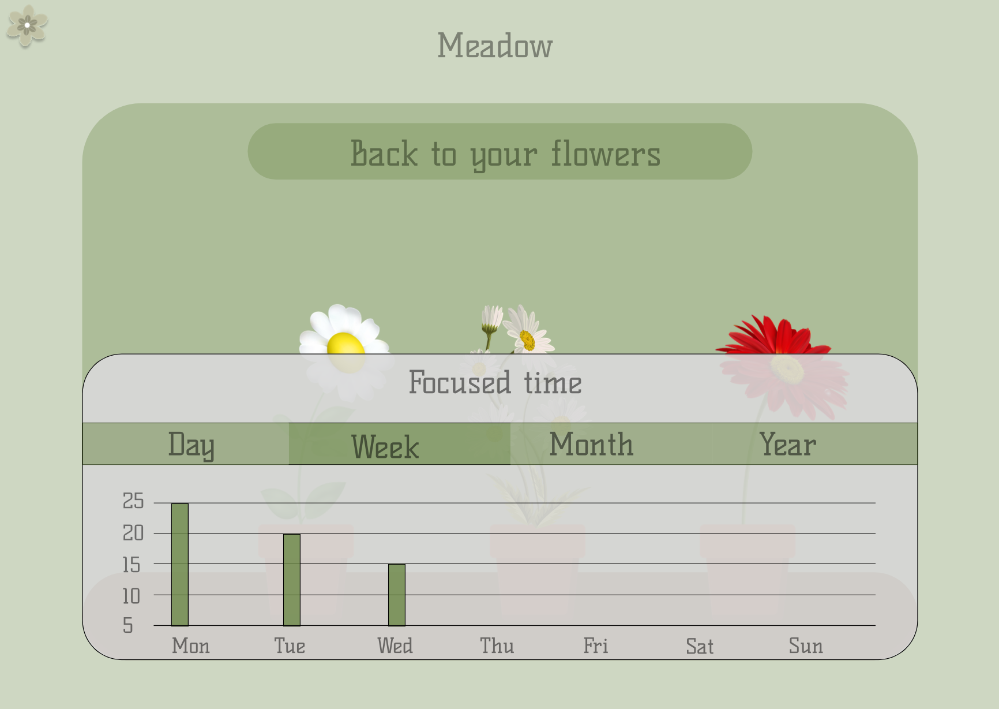

Track your learning journey through time
The app offers a comprehensive timeline, showcasing your past focus sessions and the knowledge you've nurtured. Each session contributes to your personal forest of learning, providing a sense of accomplishment and growth.

Never miss a learning opportunity!
Seamlessly integrate your focus sessions with your calendar. Schedule study sessions in advance and let the app remind you to cultivate your focus when the time arrives. This ensures your learning journey stays organized and aligns perfectly with your daily routine.
On your home screen, witness your focus blossom!
A vibrant plant grows alongside a timer, visually representing your progress as you dedicate time to learning. Watch its leaves unfurl and its stem strengthen as you stay concentrated.